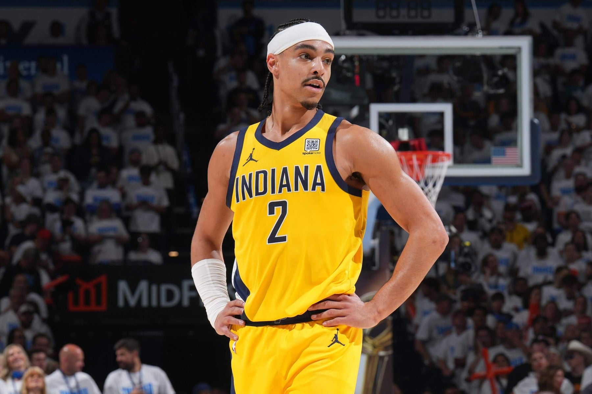
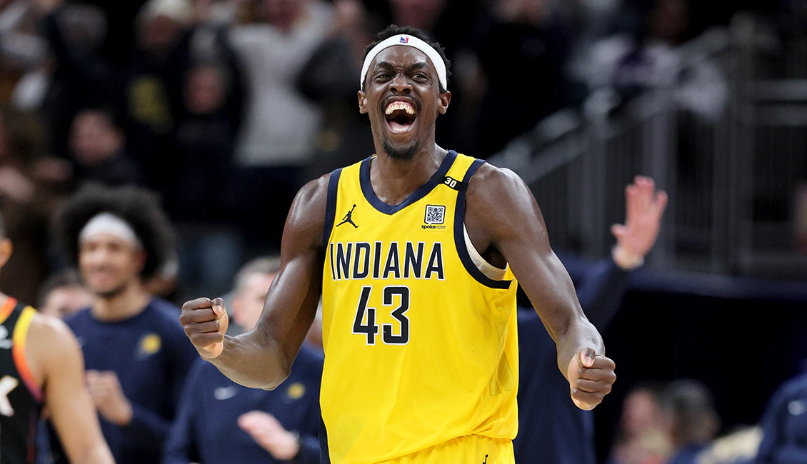
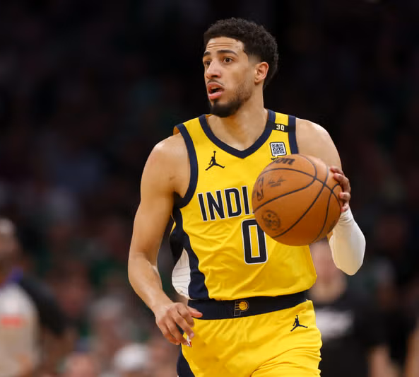

Notable Players

Isaiah Jackson
Center
University of Kentucky

Andrew Nembhard
Shooting Guard
Gonzaga University

Pascal Siakam
Power Forward
New Mexico State University

Tyrese Haliburton
Point Guard
Iowa State University
The Indiana Pacers are an American professional basketball team based in Indianapolis. They compete in the NBA’s Eastern Conference. Visit the official Pacers site for schedules and box scores.
The Pacers have won three championships, in 1970, 1972, and 1973, all in the ABA. They also reached the ABA Finals in 1969 and 1975, and have also appeared in the NBA Finals in 2000 and 2025. The team has also won nine division titles.